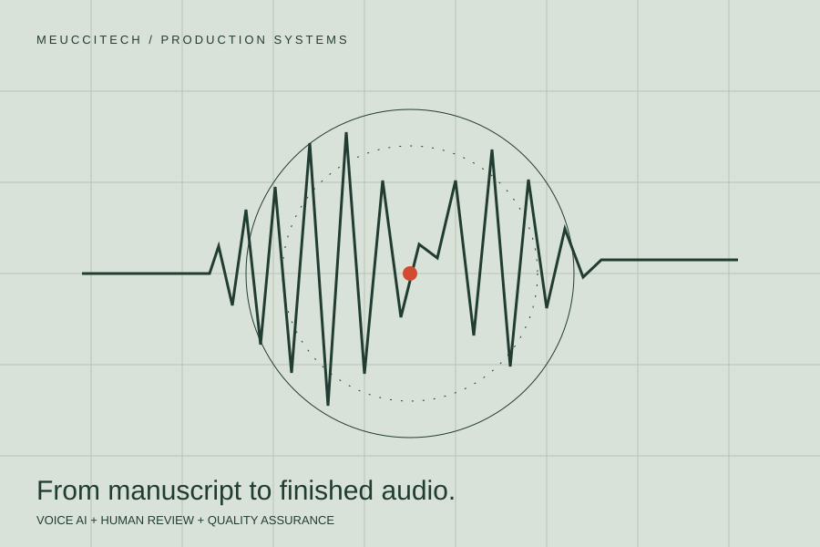

MEUCCITECH / VENTURE
An AI capability.
A working business.
As founder and Head of Product of Meuccitech, I took an AI audiobook platform from concept to commercial delivery and personally built across its product and engineering stack.
- MY ROLE
- Founder & Head of Product
- PERIOD
- 2023–present
- SCOPE
- Voice AI · Production workflows · Commercial delivery

THE CONTEXT
The problem to work on.
Generating a voice is one part of producing an audiobook. A commercial workflow also needs processing, review, quality assurance, and a dependable path from an uploaded book to finished audio.
MY CONTRIBUTION
Where I took responsibility.
Turn the concept into a production platform.
Personally built across generative-AI workflows, backend services, frontend functionality, APIs and integrations, data infrastructure, and cloud deployment. Designed a pipeline combining voice AI, automated processing, human review, and quality assurance.
Own the commercial side as well as the product.
Led the venture from concept to production with commercial partners, including an agreement with SAGA and work with a high-volume self-publishing platform.
Deliver the finished work.
Operated a production workflow that has delivered more than 1,000 hours of commercial AI-generated audio. Delivery time is measured from upload to final completion.
WHAT CAME OUT OF IT
From intention to evidence.
The delivery figures are reported in my CV and describe completed production projects. The work combines technical implementation, product ownership, partner relationships, and operational delivery.
SOURCES & FURTHER READING
This brief is based on my professional record. Roles and figures are reported in my CV.